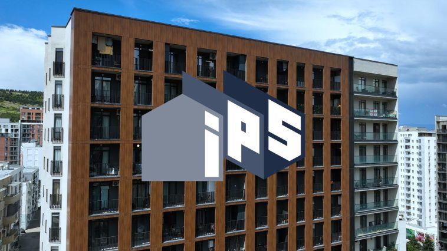
News & Blog
38 articles
2026-02-24
2025 for IPS — Large-scale projects and expanded opportunities
2025 was an important milestone for IPS — both in terms of the scale of implemented projects, as well as in terms of the company’s internal development and expansion of its partner network. It was a year when the experience accumulated so far was reflected in concrete results in the form of completed projects, an […]
Read more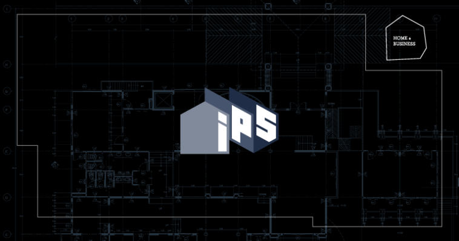
2026-02-24
IPS is a partner of the “home & Business” event
On December 12, the online magazine homeis.ge held a large-scale event at the Hotel “Telegraph”. The forum, called “Home and Business”, brings together representatives of architecture, interior design, real estate, construction and renovation, furniture, and other related fields in one space.IPS is a partner of the event.
Read more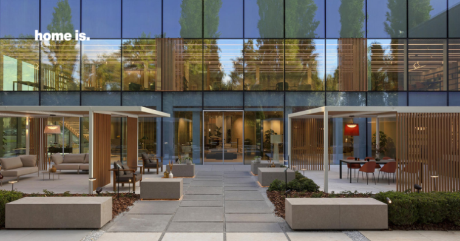
2026-02-24
Organized by IPS, Georgian designers visited the Italian factory of Atlas Concorde
In October, organized by IPS, Georgian interior designers visited the factory and showroom of Atlas Concorde in Italy on a business visit.During the visit, they toured the modern factory, got acquainted with the latest tile processing technologies, and discovered the brand’s new, distinctive collections.
Read more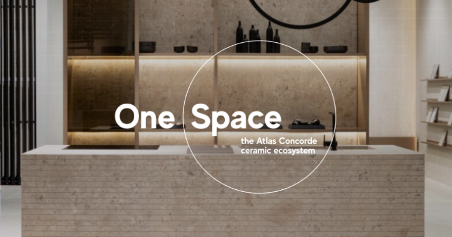
2026-02-24
Cersaie 2025 – Atlas Concorde’s “One Space” concept and newcollections
From 22 to 26 September, the international exhibition Cersaie 2025 took place in Italy, representing one of the most important platforms in the field of ceramic tiles and interior design. Every year, it brings together architects, designers, developers, and media representatives to introduce the audience to the latest trends and innovations. This year, the BolognaFiere […]
Read more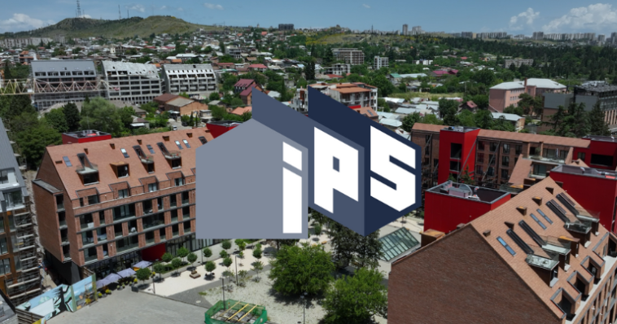
2026-02-24
We start and finish with knowledge – the experience of the IPSteam
The IPS company has been actively involved in the construction industry for more than 10 years, and together with international and local partners, carries out innovative, large-scale projects in the interior and facade design.We spoke to its founder and CEO, Luka Mikeladze, about the experience of IPS.
Read more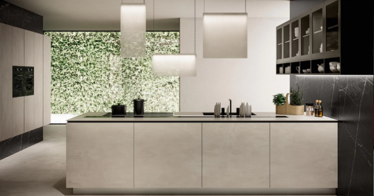
2025-08-15
Atlas Concorde Ceramic Granite Tiles in the Kitchen — Aesthetics, Quality, and Practicality in OneSpace
The kitchen, with its functional purpose, requires materials that are simultaneously durable, practical, and visually appealing.The Italian brand Atlas Concorde stands out, as its ceramic granite tiles create a modern, attractive, and long-lasting interior in the kitchen.
Read more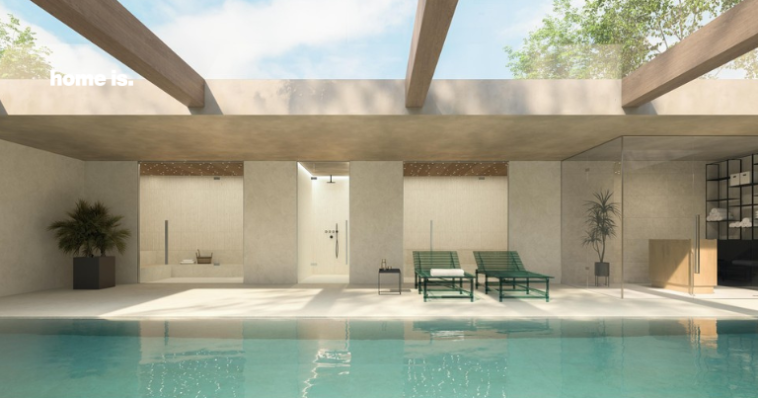
2025-07-09
How to Choose Swimming Pool Tiles – 5 Key Factors to Consider
Planning and designing a swimming pool is one of the most exciting, yet detail-oriented processes. To address such challenges, architects and designers often choose brands such as Atlas Concorde – the company that creates high-quality ceramic granite tiles that perfectly meet the specific requirements of swimming pool spaces.
Read more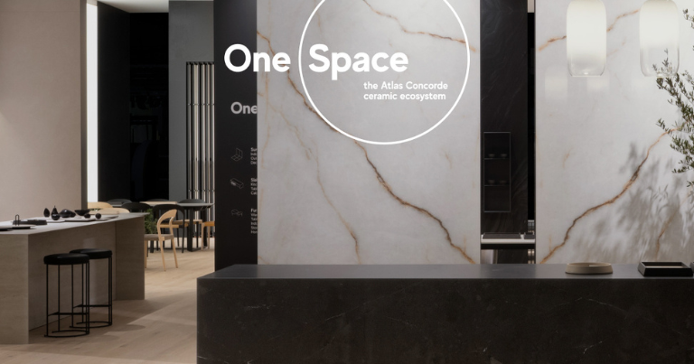
2025-05-13
Atlas Concorde at Milan Design Week – Innovative Style and a Distinctive Concept
The 2025 Milan Design Week and Salone del Mobile exhibition once again became the epicenter of the global design world. The 2025 Milan Design Week traditionally featured the Atlas Concorde brand, which stood out this year with an impressive concept.
Read more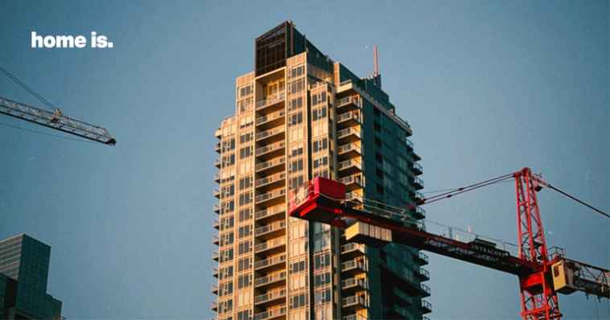
2025-04-14
The Problem of Soundproofing in Newly Constructed Buildings – How Can We ReduceNoise?
Moving into a new home is associated with joyful moments and emotions, so nothing and no one should spoil that happiness. Creating a living space is so time-consuming and expensive that there shouldn’t be even the smallest detail that leaves the future resident dissatisfied. So, what can we do to avoid such problems? The solution […]
Read more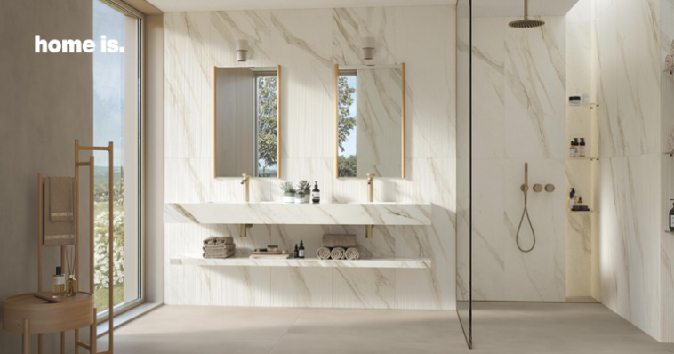
2025-04-14
How to Create a Trendy Interior? – 2025’s Top Design Trends by Anuki Kusriashvili
Interior design is constantly evolving, and 2025 is a prime example of this dynamic. This year, design focuses on balancing aesthetics with functionality, where natural elements, sustainable materials, and technological innovations play a key role. In terms of color palette, natural and calming tones take center stage, while spatial planning becomes even more tailored to […]
Read more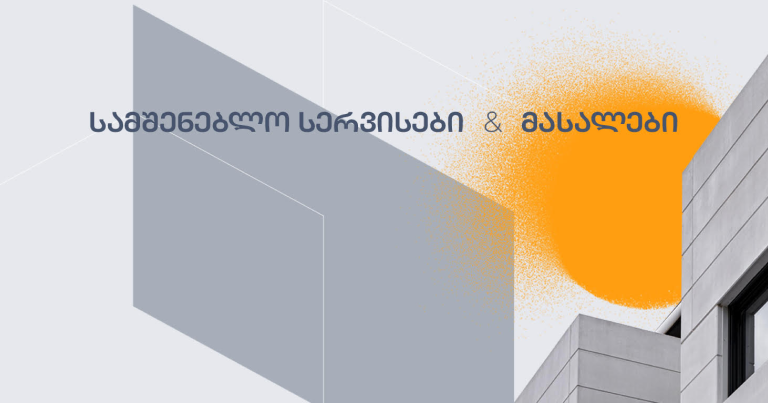
2025-01-24
IPS Company’s Innovative Projects, 2024 Achievements and Future Plans – Interview with Luka Mikeladze
Since 2016 IPS has been operating in Georgia, providing high-quality construction materials and services to local customers. In this interview, IPS Founder and CEO Luka Mikeladze shares information about IPS’s recent rebranding, the company’s achievements in 2024, innovative projects, the company’s future plans, and the core values that set IPS apart in the market.
Read more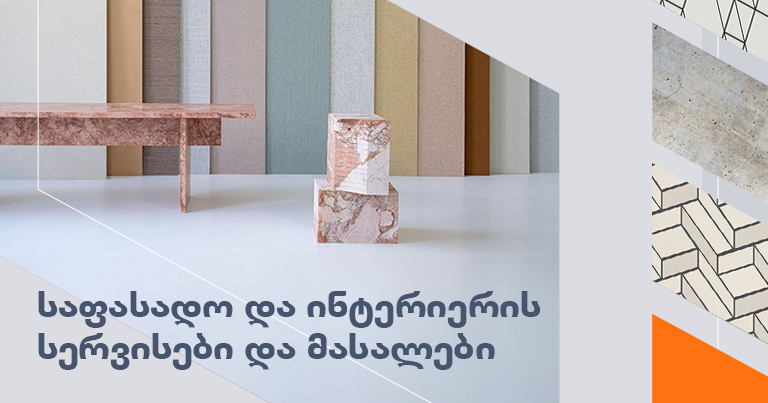
2024-10-20
Get to know IPS services and brands in the direction of facade and interior
IPS is one of the outstanding companies in the Georgian market, working in the field of construction, which started its activity in the direction of interior design in 2016. Later, in 2019, facade finishing and installation services were added to it, and then the company expanded to include sales of construction materials. Thus, IPS operates […]
Read more
2024-10-20
4 tips to increase energy efficiency during renovation
Energy efficiency in the modern construction sector and design is the most important requirement that a full-fledged residence must meet. In order to increase energy efficiency during renovation, several principles need to be taken into account, which will be a beneficial step both for ecological safety and reducing environmental damage, as well as for saving […]
Read more2024-10-20
Cersaie’s outstanding collections are made available by IPS in Georgia
Cersaie is one of the world’s most famous annual international exhibition of ceramic tiles and bathroom accessories, which takes place in Bologna. Its history begins in 1983 and it is an important event in this field, because all the leading and lesser-known brands participate in the expo, presenting their updated collections and products to a […]
Read more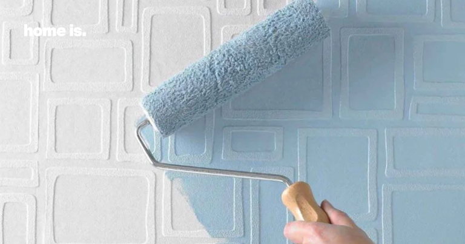
2024-07-30
What type of wallpaper is suitable for painting?
If you plan to brighten up your interior by renewing the walls, painting wallpaper is one such way. However, before starting this work, it is necessary to determine what type of wallpaper is hung on the wall. As a rule, a white surface is chosen for painting, since it is an ideal background for the […]
Read more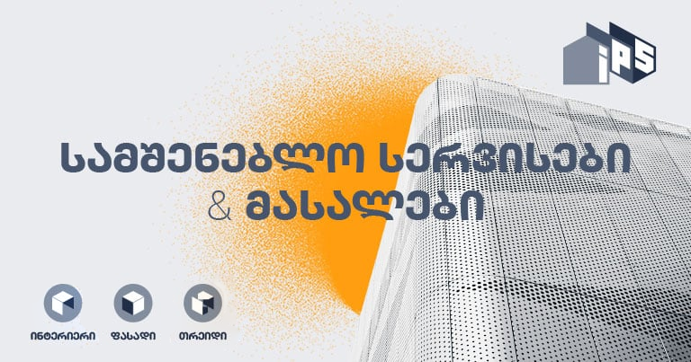
2024-07-30
IPS — an outstanding interior and facade company in the field of construction
The company IPS , which operates in the field of construction, appeared on the Georgian market in 2016 and currently works in three main directions: IPS interior — proper selection, supply and installation of interior finishing materials. IPS facade — supply and installation of facade engineering works, facade materials. IPS Trade — sale of building […]
Read more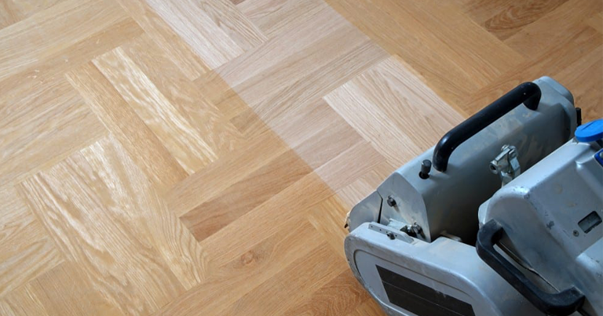
2024-07-22
4 important factors to consider when refinishing the floor
Refinishing involves renewing, restoring, straightening and repairing damaged areas of a wooden floor, which gives the floor covering a completely new look and gives it a unified, attractive look.
Read more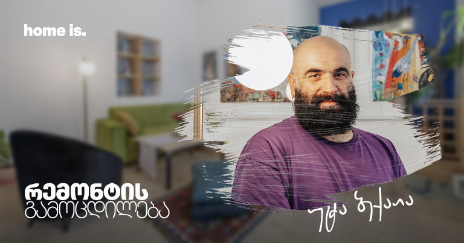
2024-07-18
Renovation experience: tips from Uta Bekaia
Our readers are familiar with the interesting and original interior of the modern multimedia artist, painter and costume designer Uta Bekaia . As it is known, Uta worked as a theater set designer for years, so he had some connection with interior design. He developed the design concept of his own house completely independently and […]
Read more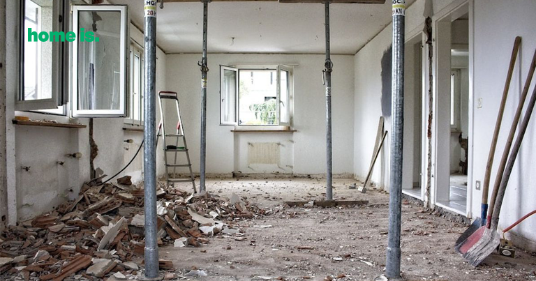
2024-07-01
16 stages of complex repair in order
Repair is a rather time-consuming task, and how much it is regrettable when, due to the wrong sequence, it is necessary to repeat some of the work, or at least to break what was done. Today I will tell you about all the work and its order, which are carried out during the complex repair […]
Read more